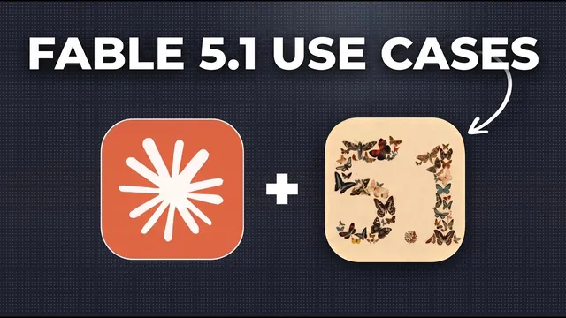

Fable 5.1 미친 활용 5가지

원본 영상 보기 →
- 비싼 모델은 "고레버리지 작업"에만 쓰세요
- 토큰 낭비의 진짜 원인은 "완료 기준의 부재"입니다
- 하위 에이전트 모델 지정 한 줄이 비용을 좌우해요
한 줄 요약
Claude Fable 5.1은 리서치·설계·데이터 분석처럼 가치가 크고 끝까지 맡길 수 있는 복잡한 작업에만 쓰세요. 토큰 낭비를 막으려면 프롬프트를 사전에 15분쯤 설계하고, "완료 기준"을 명시하고, 하위 에이전트는 Sonnet 5로 돌려야 합니다. 다섯 가지 활용 사례로 정리했어요.
전체 내용 정리
강력하지만 비싸요 — 언제 쓸지가 핵심입니다
Anthropic이 내놓은 Claude Fable 5.1은 리서치, 코딩, 추론에서 Fable 5와 Opus 5를 크게 앞섭니다. Fable 5보다 실행 비용이 싸졌지만 여전히 비싼 모델이에요.
그래서 큰 그림은 두 가지입니다.
첫째, 이런 모델은 잠재 가치가 큰 복잡한 end-to-end 작업에만 씁니다. 그래야 조금 더 쓰는 비용이 정당화돼요.
둘째, 작업 사전 계획과 좋은 프롬프트에 훨씬 많은 시간을 들입니다. 모델이 엉뚱한 방향으로 가서 토큰을 태우는 걸 막기 위해서요.
활용 1: 리서치 — 프롬프트 하나로 아웃라인 80%를 완성했어요
Fable 5.1은 장시간 실행에 강하고 리서치 능력에서 가장 큰 향상이 있었습니다. 다단계 웹 리서치와 딥리서치 과제로 훈련됐고 큰 맥락 전반의 추론이 개선됐어요.
발표자는 이 모델로 새 유튜브 영상의 사전 아웃라인을 만들었습니다. Claude의 고객 사례 라이브러리를 훑어 비즈니스의 AI 도입을 개선하는 팁과 전략을 뽑아 달라고 요청했어요.
약 10분이 걸렸고, 하위 에이전트 네 개를 띄워 고객 사례 40건을 분석하고 전술 260개를 추출한 뒤 전체 영상 아웃라인을 만들었습니다. 각 팁마다 구체적 출처와 링크, 타깃 오디언스에 적용하는 법, 한 줄 요약까지 줬고 녹화 준비의 80% 수준이었어요.
한 번의 프롬프트로 좋은 결과가 나온 이유는 사전 계획에 시간을 썼기 때문입니다.
사전 계획: 일·이유·가드레일·완료 기준
발표자가 권하는 방식은 모범 사례를 모두 담은 프롬프트 프레임워크를 쓰는 거예요. 프레임워크를 거치면 각 항목을 생각하고 언어로 표현하도록 강제돼서, 한 번에 좋은 결과가 나올 확률이 높아집니다.
이번에는 10~15분 앉아서 프롬프트를 만들었어요.
일을 최대한 정의하고, 그 일을 왜 해야 하는지 이유를 정의했습니다. 이 모델들은 요청 뒤의 의도에 잘 반응하거든요.
가드레일과 규칙을 생각하는 게 가장 중요해요. 무엇이 잘못될 수 있는지 미리 짚어 문제를 예방하는 겁니다. 예를 들어 이렇게 적었어요.
"모든 항목은 소규모 사업자나 기업의 AI 도입을 돕는 서비스 제공자가 실제로 적용할 수 있어야 한다. 팁이 너무 뻔하거나 너무 기술적이거나 한 회사에만 해당돼선 안 된다."
너무 길고 구체적이고 비현실적인 팁 목록이 나올 것을 예측했기 때문입니다.
마지막으로 완료가 어떤 모습인지 정의하는 게 중요해요. 이 모델들은 너무 적게가 아니라 너무 많이 하는 경향이 있습니다. "10~15개 항목"이라고 명시하지 않으면 50개를 찾으려다 토큰을 크게 태울 수 있어요.
"Interview Me" 스킬로 사전 계획을 도울 수도 있습니다. 맥락을 주면 질문을 던지고, 마지막에 맞는 프레임워크로 프롬프트를 만들어 줘요.
활용 2: 설계 — 참조 스타일을 한 번에 재현해요
Fable 5.1은 지시를 매우 잘 따르고 새 비전 도구가 강력하며 취향을 더 잘 이해하는 것으로 보입니다.
발표자는 최근 출시한 앱의 랜딩 페이지를 다시 디자인하는 데 썼어요. 같은 프레임워크로 프롬프트를 주고, 좋은 참조 웹사이트를 함께 줬습니다.
결과물은 참조의 스타일을 잘 따랐고, 깔끔하고 미니멀하며 원본보다 나았어요. 참조 사이트에 있던 특정 마우스 오버 애니메이션까지 반영했고 한 번에 완성했습니다.
설계에 쓸 때도 사전 계획을 하고 참조를 확보해야 반복하지 않고, 반복이 곧 토큰을 태우는 지점이에요.
활용 3: 데이터 분석 — 한 줄로 비용이 10분의 1
Fable 5.1은 장시간 작업과 복잡하고 비정형인 대용량 데이터 해석에 강합니다.
발표자는 지난 두 달간의 고객 지원 통화, 지원 티켓, 커뮤니티 Q&A를 전부 분석해 보고서를 만들었어요. 지원 통화 346건, Q&A 15건, 지원 티켓 305건을 분석해 대시보드를 냈습니다.
내용은 가장 흔한 이슈 16개를 구체적 사례·출처와 함께, 페인포인트 기반 제품 개발 아이디어 우선순위, 타깃 오디언스 분석, 통화와 티켓 전반의 공통 테마(1위는 긍정적 피드백)였어요.
여기서 중요한 팁이 있습니다. 대용량 데이터를 해석하게 하면 하위 에이전트를 띄우는데, "하위 에이전트는 Sonnet 5로 실행하라"고 지정해야 해요.
지정하지 않으면 Fable 모델로 돌아 비용의 대부분이 거기서 나오고, Sonnet 5로 돌리면 10분의 1 이하가 될 수 있습니다. 분석 작업에서도 완료 기준을 정의해야 하고요. 그러지 않으면 너무 많이 해요.
활용 4: 복잡한 개념 단순화
Fable 5.1은 정보를 사람이 이해하기 쉽게 제시하는 면에서 Opus 5와 Fable 5보다 낫습니다. 특히 Opus 5는 너무 기술적이고 장황하며 읽기 어려운 경향이 있었어요.
발표자는 Opus 5와 Fable 5.1에 똑같이 회사 세컨드 브레인의 아키텍처를 "ELI5" 스킬로 시각화해 달라고 요청했습니다.
Opus 5 결과는 괜찮았지만 지나치게 복잡하고 이해하기 어렵고 문구가 읽히지 않았어요. 같은 프롬프트로 Fable 5.1은 디자인과 문구 모두 단순하고 이해하기 쉬웠으며 개념 전체를 아주 단순하게 풀었습니다. ELI5 스킬은 Anthropic이 만든 거예요.
활용 5: 세컨드 브레인 — 225개 vs 3개
세컨드 브레인은 여러 채팅에 걸쳐 AI에 지속적인 맥락과 기억을 주는 방식입니다. 발표자의 세컨드 브레인에는 회의 전사본, 전략 문서, 진행한 프로젝트 등 수천 개의 맥락 문서가 텍스트 파일로 있어요.
Fable 5.1은 맥락 검색에 특히 뛰어나, 출력 전에 다른 모델보다 훨씬 많은 문서를 읽습니다.
발표자는 지난 1년간 사업의 궤적(진전, 내린 결정, 지킨 것, 해소한 병목)을 분석해 달라고 프롬프트를 일부러 열어 뒀어요.
결과가 극명했습니다. Fable 5.1은 세컨드 브레인에서 225개 파일을 읽었고, Opus 5는 3개만 읽었어요.
결과 보고서는 인상적이면서도 몇 달 전과 같은 병목이 여전히 남아 있다는 점에서 다소 뼈아팠다고 합니다. 맥락이 많이 필요한 고가치 작업이라면 Fable 5.1로 시도해 볼 만해요.
핵심 인사이트
- 비싼 모델은 "고레버리지 작업"에만 쓰세요: 영상 아웃라인이나 사업 궤적 분석처럼 결과의 가치가 크고 한 번 잘 나오면 오래 쓰는 산출물에만 최상위 모델을 배정합니다. "다음 회의가 뭐야" 같은 조회에 쓰면 낭비예요.
- 토큰 낭비의 진짜 원인은 "완료 기준의 부재"입니다: 이 모델들은 적게가 아니라 많이 하는 쪽으로 치우쳐요. "항목 10~15개", "출력은 이 형식" 같은 종료 조건을 명시하지 않으면 50개를 찾으려다 비용이 폭증합니다.
- 하위 에이전트 모델 지정 한 줄이 비용을 좌우해요: 대용량 데이터 분석 시 "하위 에이전트는 Sonnet으로 실행"이라고 넣으면 같은 결과를 10분의 1 이하 비용으로 얻을 수 있습니다.
- 사전 계획 15분이 반복 수정 시간을 없앱니다: 일·이유·가드레일·완료 기준을 프레임워크로 미리 적으면 모델이 엉뚱한 방향으로 가는 걸 막아요. 반복 수정이 곧 토큰을 태우는 지점입니다.
오늘 당장 해볼 것
- 다음에 AI에 큰 작업을 시키기 전, 5분만 들여 네 줄을 적어 보세요. (1) 정확히 무슨 일을, (2) 왜 하는지, (3) 하지 말아야 할 것과 피해야 할 함정, (4) "완료"는 어떤 모습인지(항목 수, 분량, 출력 형식). 이 네 줄을 프롬프트 맨 앞에 붙이면 됩니다.
- 데이터가 많은 분석을 맡길 때는 "하위 에이전트는 Sonnet으로 실행해 달라"는 문장을 프롬프트에 넣어 비용을 낮추세요.
- 결과가 복잡하고 어렵게 나왔다면 "ELI5 방식으로, 비전문가도 이해하도록 다시 정리해 줘"를 덧붙여 읽을 수 있는 버전을 받으세요. 설계나 이미지 작업은 참고할 사이트나 이미지를 함께 첨부해 반복 수정을 줄이시고요.